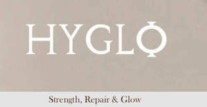

Trade Mark Journal No.2025/011 14 March 2025
UK00004166492 27 February 2025 (3,5)

- Class 3
- Hair care preparations; Cosmetic hair care preparations; Beard care preparations; Skin care preparations; Facial care preparations; Hair treatment preparations; Hair grooming preparations; Hair preparations and treatments; Beauty care preparations; Nail care preparations; Cosmetic preparations for skin care; Skin care (Cosmetic preparations for -); Hair care preparations, not for medical purposes; Hair cleaning preparations; Hair care lotions; Non-medicated skin care preparations; Preparations for the care of the body; Beauty preparations for the hair; Lip care preparations; Hair care serums; Hair care creams; Hair styling preparations; Cosmetic preparations for the hair and scalp; Cosmetic preparations for body care; Cosmetic nail care preparations; Hair care masks; Hair straightening preparations; Body cleaning and beauty care preparations; Sun care preparations; Hair care serum; Non-medicated face care preparations; Skin, eye and nail care preparations; Conditioning preparations for the hair; Non-medicated lip care preparations; Sun care preparations for cosmetic use; Preparations for protecting the hair from the sun; Wrinkle removing skin care preparations; Skin care cosmetics; Hair strengthening treatment lotions; Moisturizing preparations for the skin; Make-up preparations; Skin care oils [cosmetic]; Skin care oils [non-medicated]; Skin care lotions [cosmetic]; Skincare preparations; Eyelashes (Cosmetic preparations for -); Body care cosmetics; Skin care creams [cosmetic]; Cosmetic creams for skin care; Cosmetics preparations; Tooth care preparations; Hair removal preparations; Non-medicated body care preparations; Hair care lotions [for cosmetic use]; Hair care agents; Hair care creams [for cosmetic use]; Non-medicated sun care preparations; Preparations for setting hair; Hair curling preparations; Hair removal and shaving preparations; Non-medicated hair treatment preparations for cosmetic purposes; Oral care preparations [non-medicated]; Cosmetic preparations for the care of mouth and teeth; Oil baths for hair care; Hair waving preparations; Waving preparations for the hair; Foot care preparations (Non-medicated -); Preparations for protecting coloured hair; Skin care mousse; Shampoos for pets [non-medicated grooming preparations]; Skin whitening preparations; Facial preparations; Skin care creams, other than for medical use; Shampoos for animals [non-medicated grooming preparations]; Cosmetic preparations for eyelashes; Cosmetic preparations for nail drying; Shaving preparations; Cosmetic preparations for skin renewal; Non-medicated beauty preparations; Cosmetic preparations for dry skin during pregnancy; Essences for skin care; Beauty care cosmetics; Beauty creams for body care; Distilled oils for beauty care; Beauty serums; Beauty lotions; Beauty tonics for application to the body; Beauty creams; Beauty serums with anti-ageing properties; Sets of cosmetic oral care products; Cosmetic products in the form of aerosols for skin care; Beauty milk.
- Class 5
- Health food supplements made principally of vitamins; Nutritional supplements; Vitamin preparations in the nature of food supplements; Dietary supplements promoting fitness and endurance; Health food supplements made principally of minerals; Mineral nutritional supplements; Health food supplements for persons with special dietary requirements; Food supplements; Dietary supplements with a cosmetic effect; Fitness and endurance supplements; Vitamin and mineral food supplements; Liquid nutritional supplements; Mineral dietary supplements; Food supplements for sportsmen; Vitamin supplements; Food supplements for non-medical purposes; Vitamin and mineral supplements; Food supplements for medical purposes; Nutritional supplements for veterinary use; Anti-oxidant food supplements; Dietary and nutritional supplements; Dietary food supplements; Dietary supplements for medical use; Vitamin and mineral supplements for pets; Natural dietary supplements for treating claustrophobia; Herbal supplements; Food supplements for dietetic use; Propolis dietary supplements; Food supplements for veterinary use; Mineral dietary supplements for animals; Homeopathic supplements; Dietary supplements for pets; Dietary supplements for animals; Vitamin supplements for animals; Mineral dietary supplements for humans; Nutritional supplement energy bars; Nutraceuticals for use as a dietary supplement; Probiotic supplements; Acai powder dietary supplements; Dietary supplements for pets in the nature of a powdered drink mix; Chlorella dietary supplements; Flaxseed dietary supplements; Pollen dietary supplements; Liquid dietary supplements; Pharmaceutical products for skin care for animals; Dietary supplements and dietetic preparations; Dietary supplements for humans; Anti-oxidant supplements.
HYGLO Limited